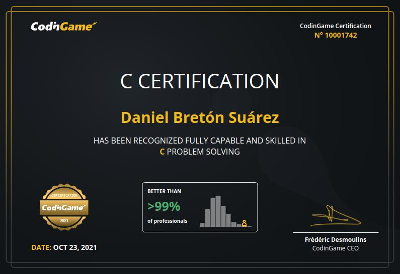

Daniel Bretón Suárez Daniel Bretón Suárez
Daniel Bretón Suárez Daniel Bretón SuárezSoftware engineer with experience in IT and embedded.
About me: I am very independent, good at problem solving and I can think outside the box. I am always learning something new because I am very curious.
I focus on developing highly optimized tools and applications. I’m passionate about writing outstanding unit tests. I also have experience on managing small teams and projects. I have experience developing multi-platform applications (Linux, Windows, MacOS) and embedded.
| Mastered | C, C++ |
| Advanced | Golang, Python, Bash, Powershell |
| Intermediate | Matlab/Octave, Java, Assembly |
| Methodologies | Agile |
| Workflows | GitFlow |
| Code quality | Best practices knowhow |
| Tools | Valgrind, GNU debugger, Cppcheck |
| DVCS | Git |
| DevOps | Gitlab, Github |
| Architectures | 8-bit ARM, 32-bit ARM, 8-bit PIC, 8051, embedded Linux |
| Low-level communications | SPI, UART, I2C |
| MCU knowhow | IRQs, low-power management, bus clocking, RTC |
| RF | RFID, NB-IoT, 4G, 3G, 2G, LoRa, 868Mhz/433Mhz p2p radios |
| Hardware development | Analysis, simulations, Schematics, PCB design |
| Laboratory | Soldering, multimeter, Oscilloscope, signal debugging |
| Cloud services | AWS |
| Virtual environments | Vagrant, Virtual Box |
| Automation | Ansible |
| Containers | Docker |
| OS experience | Linux (multiple flavours), Windows, MacOS (basic knowledge) |
| Cybersecurity | Endpoint security knowhow |
| Industrial devices | Aging tests, defective analysis, on-field patches |
| Manufacturing | Manufacturing instructions, integration, training |
| Smart grids | DLMS, massive deployment, massive updates |
Position = Senior software engineer
Location = Remote
Period = From March 2022
Sector = IT -> Cybersecurity
Description = Develop and provide engineering support for a multi-platform and multi-purpose
endpoint monitoring solution based on Osquery to recollect a variety of datasets
sitting in their infrastructure, efficiently process them, and create a
comprehensive view that spans multiple applications and use cases in areas such as
security monitoring, IT health, and performance monitoring or capacity planning.
Provide visibility and collaborate with the Osquery open-source project.
Technologies = C++, Golang, AWS, Vagrant, Ansible, DockerPosition = Embedded software engineer
Location = Bilbao Area
Period = From September 2018 to March 2022
Sector = Industrial -> Smart Grids
Description = Develop embedded software for multiple smart grid projects.
Develop drivers for ARM 32-bit MCU. Develop tools and scripts.
Manage software teams. Implement good practices.
Schedule software projects. Design architecture.
Technology consultant. International project on Saudi Arabia.
Technologies = C, C++, Python, AssemblyPosition = Hardware and Firmware engineer
Location = Central Asturias Area
Period = From April 2015 to September 2018
Sector = R&D -> IT/Robotics
Description = Develop hardware and embedded software for multiple projects.
Schedule projects. Design architecture.
Technology consultant and forecasting.
Technologies = C, Assembly, PCB designPosition = Software engineer
Location = Central Asturias Area
Period = From October 2014 to April 2015
Sector = IT -> Consultancy
Description = Develop software for insurance company.
Technologies = Java, C++Position = Power electronics researcher
Location = Remote
Period = From September 2013 to October 2014
Sector = Industrial -> R&D
Description = Research new technology for DC-DC converters (equalizer).
Technologies = Power electronicsMaster of Science in telecommunications engineering conducted at Universidad de Oviedo. Asturias, Spain.
| Subject | Company | Year | Description |
|---|---|---|---|
| TDD in C++ | Serban Stoenescu | 2023 | Test Driven Development in C++ with Googletest and Googlemock |
| The Agile Samurai Bootcamp | Jonathan Rasmusson | 2023 | Setup, execute, and successfully deliver Agile projects |
| AWS Essentials | Amazon Web Services (AWS) | 2023 | AWS Platform, global infrastructure, security, and the core services |
| Essential productivity skills | LifeLabs Learning | 2022 | Habits to increase daily productivity |
| Go: The Complete Developer’s Guide | Stephen Grider | 2022 | Master the fundamentals and advanced features of the Go Programming Language (Golang) |
| Ansible for beginers | Mumshad Mannambeth | 2022 | Ansible to beginner in DevOps. Practice Ansible with coding exercises |
| Code quality on Python | Toronto University | 2021 | Writing quality code that runs correctly and efficiently |
| Remote team management | GitLab | 2021 | Learn and apply remote work best practices, build your remote work policy |
| Gitlab best practices | ZIV | 2021 | How to work efficiently using Gitlab |
| Cybersecurity at work | ZIV | 2021 | Protect yourself and your company from cyber attacks and social engineering |
| Doxygen best practices | ZIV | 2021 | Best ways to document C/C++ code using doxygen |
| Unitary tests and continuous integration | ZIV | 2020 | Implement continuous integration using Jenkins |
| Static code analysis tools | ZIV | 2020 | Tools for analyzing C/C++ code quality |
| GNU Autotools | ZIV | 2019 | In-deep GNU Build System (Autotools) workshop for building software under Linux systems |
| Introduction to PRIME | ZIV | 2019 | Prime protocol basics for communicating using the electricity network |
| First Aids | Tecnalia | 2019 | Immediate assistance given to any person with either a minor or serious illness or injury |
| Code style | Tecnalia | 2019 | Best practices to code efficiently in C/C++ |
| Electrical risks and security | Tecnalia | 2019 | Guidelines to working safe in a environment with electrical risks |
| Introduction to A.I | Stanford University | 2019 | Introduction to Artificial Intelligence, probabilistic models |
The Transportation Systems Committee of the IEEE Industry Applications Society.
For the manuscript co-authored with M. Arias, M.M. Hernando, U. Viscarret and Iñigo Gil, entitled “Equalization system for serially-connected battery cells based on the wave-trap concept” as presented at the 2014 Energy conversion Congress and Exposition, Pittsburgh, PA, USA.
| C language certification | C++ language certification |
|  |  |
Music, hiking, running, science, homebrew beer, culture, gastronomy
Last modification: 11/03/2023
This document is public and is hosted at:
This document has been generated using markdown and pandoc, source code is open and available at https://github.com/dabresua/dabresua.github.io